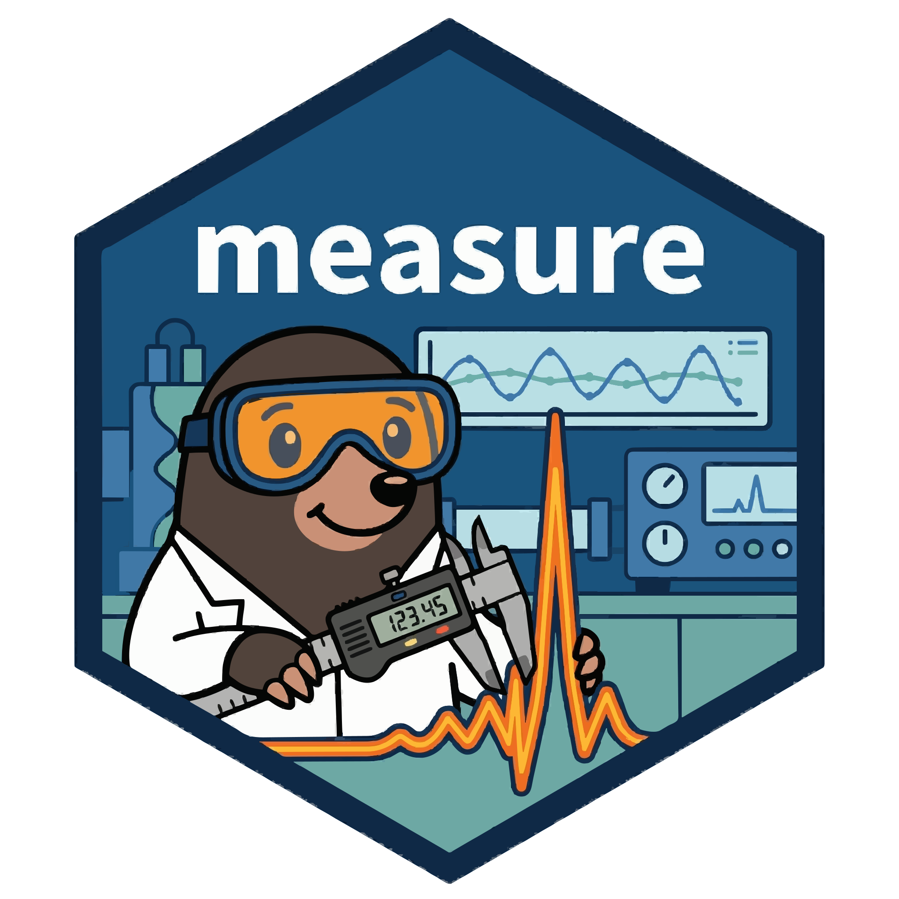

How-To: Integrating with tidymodels
Source:vignettes/articles/howto-tidymodels.Rmd
howto-tidymodels.RmdIntroduction
One of measure’s key design goals is integration with the tidymodels ecosystem. This article shows how to use measure preprocessing in complete modeling workflows, including:
- Bundling preprocessing with models using workflows
- Cross-validation with measure recipes
- Hyperparameter tuning for preprocessing steps
- Comparing preprocessing strategies
Setup: The meats dataset
We’ll use the NIR spectroscopy dataset from modeldata to
predict water content in meat samples. The example uses a training
partition for resampling and keeps the held-out partition for one final
evaluation.
data("meats", package = "modeldata")
meats_water <- dplyr::select(meats, water, dplyr::starts_with("x_")) |>
dplyr::mutate(sample_id = dplyr::row_number())
set.seed(42)
split <- rsample::initial_split(meats_water, prop = 0.75, strata = water)
train <- rsample::training(split)
cat("Training samples:", nrow(train), "\n")
#> Training samples: 159The dataset has no sample identifier, so sample_id gives
each spectrum a unique key. The recipe marks it as an ID rather than a
predictor. This also lets step_measure_output_wide()
restore one row per sample when spectral measurements are converted back
to ordinary columns.
make_measure_recipe <- function(data) {
recipes::recipe(water ~ ., data = data) |>
recipes::update_role(sample_id, new_role = "id") |>
measure::step_measure_input_wide(tidyselect::starts_with("x_"))
}
set.seed(42)
folds <- rsample::vfold_cv(train, v = 3, strata = water)Basic workflow
The recipe below converts the 100 wavelength columns to measure’s
internal format, preprocesses each spectrum, converts the result back to
numeric columns, and reduces those columns to five principal components.
step_pca() is an ordinary recipes step, so it
follows step_measure_output_wide().
rec <- make_measure_recipe(train) |>
measure::step_measure_savitzky_golay(
window_side = 3,
differentiation_order = 1,
degree = 2
) |>
measure::step_measure_snv() |>
measure::step_measure_output_wide() |>
recipes::step_pca(recipes::all_predictors(), num_comp = 5)
lm_spec <- parsnip::linear_reg() |>
parsnip::set_engine("lm")
wf <- workflows::workflow() |>
workflows::add_recipe(rec) |>
workflows::add_model(lm_spec)
wf
#> ══ Workflow ════════════════════════════════════════════════════════════════════
#> Preprocessor: Recipe
#> Model: linear_reg()
#>
#> ── Preprocessor ────────────────────────────────────────────────────────────────
#> 5 Recipe Steps
#>
#> • step_measure_input_wide()
#> • step_measure_savitzky_golay()
#> • step_measure_snv()
#> • step_measure_output_wide()
#> • step_pca()
#>
#> ── Model ───────────────────────────────────────────────────────────────────────
#> Linear Regression Model Specification (regression)
#>
#> Computational engine: lmFit and evaluate with resampling
Assess the workflow on the training partition first.
fit_resamples() fits the recipe using each fold’s analysis
rows and applies it to that fold’s assessment rows.
metrics <- yardstick::metric_set(yardstick::rmse, yardstick::rsq)
baseline_resamples <- tune::fit_resamples(
wf,
resamples = folds,
metrics = metrics
)
baseline_metrics <- tune::collect_metrics(baseline_resamples)
stopifnot(all(baseline_metrics$n == nrow(folds)))
baseline_metrics
#> # A tibble: 2 × 6
#> .metric .estimator mean n std_err .config
#> <chr> <chr> <dbl> <int> <dbl> <chr>
#> 1 rmse standard 1.88 3 0.00930 pre0_mod0_post0
#> 2 rsq standard 0.965 3 0.00292 pre0_mod0_post0Cross-validation
folds contains three resamples made only from the
training partition. The recipe stays inside the workflow so
data-dependent preprocessing is estimated within each analysis fold.
folds
#> # 3-fold cross-validation using stratification
#> # A tibble: 3 × 2
#> splits id
#> <list> <chr>
#> 1 <split [104/55]> Fold1
#> 2 <split [107/52]> Fold2
#> 3 <split [107/52]> Fold3Tuning preprocessing parameters
The Savitzky-Golay step exposes window_side,
differentiation_order, and degree for tuning.
This example tunes window size and derivative order while fixing the
polynomial degree at 2. A four-row grid and three folds keep the
demonstration compact.
sg_parameters <- tune::tunable(
make_measure_recipe(train) |>
measure::step_measure_savitzky_golay()
) |>
dplyr::select(name, component)
stopifnot(
setequal(
sg_parameters$name,
c("window_side", "differentiation_order", "degree")
)
)
sg_parameters
#> # A tibble: 3 × 2
#> name component
#> <chr> <chr>
#> 1 window_side step_measure_savitzky_golay
#> 2 differentiation_order step_measure_savitzky_golay
#> 3 degree step_measure_savitzky_golay
rec_tune <- make_measure_recipe(train) |>
measure::step_measure_savitzky_golay(
window_side = tune::tune("window_side"),
differentiation_order = tune::tune("differentiation_order"),
degree = 2
) |>
measure::step_measure_snv() |>
measure::step_measure_output_wide() |>
recipes::step_pca(recipes::all_predictors(), num_comp = 5)
wf_tune <- workflows::workflow() |>
workflows::add_recipe(rec_tune) |>
workflows::add_model(lm_spec)
parameter_set <- tune::extract_parameter_set_dials(wf_tune)
stopifnot(
setequal(parameter_set$name, c("window_side", "differentiation_order"))
)
parameter_set
#> Collection of 2 parameters for tuning
#>
#> identifier type object
#> window_side window_side nparam[+]
#> differentiation_order differentiation_order nparam[+]
#> Define the parameter grid
The selected ranges keep every combination valid with
degree = 2: the differentiation order is no greater than
the polynomial degree, and the window is wider than the polynomial
degree.
parameter_set$object[[match("window_side", parameter_set$id)]] <-
measure::window_side(range = c(2L, 4L))
parameter_set$object[[match("differentiation_order", parameter_set$id)]] <-
measure::differentiation_order(range = c(0L, 2L))
grid <- dials::grid_regular(parameter_set, levels = 2)
stopifnot(nrow(grid) == 4L)
grid
#> # A tibble: 4 × 2
#> window_side differentiation_order
#> <int> <int>
#> 1 2 0
#> 2 4 0
#> 3 2 2
#> 4 4 2Run the tuning
Each of the four parameter combinations is evaluated on the same three training folds. The returned table shows the measured resampling performance.
tune_results <- tune::tune_grid(
wf_tune,
resamples = folds,
grid = grid,
metrics = metrics
)
tuning_metrics <- tune::collect_metrics(tune_results)
stopifnot(all(tuning_metrics$n == nrow(folds)))
tune::show_best(tune_results, metric = "rmse", n = 4)
#> # A tibble: 4 × 8
#> window_side differentiation_order .metric .estimator mean n std_err
#> <int> <int> <chr> <chr> <dbl> <int> <dbl>
#> 1 4 2 rmse standard 1.50 3 0.0294
#> 2 2 2 rmse standard 1.50 3 0.0465
#> 3 2 0 rmse standard 1.88 3 0.100
#> 4 4 0 rmse standard 1.88 3 0.0986
#> # ℹ 1 more variable: .config <chr>Comparing preprocessing strategies
This comparison keeps the model and the number of principal components fixed while changing spectral preprocessing. Every recipe is evaluated on the training folds; no test-set metric is used to rank these strategies.
rec_snv <- make_measure_recipe(train) |>
measure::step_measure_snv() |>
measure::step_measure_output_wide() |>
recipes::step_pca(recipes::all_predictors(), num_comp = 5)
rec_d1_snv <- make_measure_recipe(train) |>
measure::step_measure_savitzky_golay(
window_side = 3,
differentiation_order = 1,
degree = 2
) |>
measure::step_measure_snv() |>
measure::step_measure_output_wide() |>
recipes::step_pca(recipes::all_predictors(), num_comp = 5)
rec_msc <- make_measure_recipe(train) |>
measure::step_measure_msc() |>
measure::step_measure_output_wide() |>
recipes::step_pca(recipes::all_predictors(), num_comp = 5)
rec_d2 <- make_measure_recipe(train) |>
measure::step_measure_savitzky_golay(
window_side = 3,
differentiation_order = 2,
degree = 2
) |>
measure::step_measure_output_wide() |>
recipes::step_pca(recipes::all_predictors(), num_comp = 5)
rec_snv_center <- make_measure_recipe(train) |>
measure::step_measure_snv() |>
measure::step_measure_center() |>
measure::step_measure_output_wide() |>
recipes::step_pca(recipes::all_predictors(), num_comp = 5)
rec_norm_scale <- make_measure_recipe(train) |>
measure::step_measure_normalize_sum() |>
measure::step_measure_scale_auto() |>
measure::step_measure_output_wide() |>
recipes::step_pca(recipes::all_predictors(), num_comp = 5)
wf_set <- workflowsets::workflow_set(
preproc = list(
snv = rec_snv,
d1_snv = rec_d1_snv,
msc = rec_msc,
d2 = rec_d2,
snv_center = rec_snv_center,
norm_scale = rec_norm_scale
),
models = list(lm = lm_spec)
)
wf_set
#> # A workflow set/tibble: 6 × 4
#> wflow_id info option result
#> <chr> <list> <list> <list>
#> 1 snv_lm <tibble [1 × 4]> <opts[0]> <list [0]>
#> 2 d1_snv_lm <tibble [1 × 4]> <opts[0]> <list [0]>
#> 3 msc_lm <tibble [1 × 4]> <opts[0]> <list [0]>
#> 4 d2_lm <tibble [1 × 4]> <opts[0]> <list [0]>
#> 5 snv_center_lm <tibble [1 × 4]> <opts[0]> <list [0]>
#> 6 norm_scale_lm <tibble [1 × 4]> <opts[0]> <list [0]>Evaluate all strategies
comparison <- workflowsets::workflow_map(
wf_set,
fn = "fit_resamples",
resamples = folds,
metrics = metrics
)
strategy_results <- workflowsets::rank_results(comparison, rank_metric = "rmse") |>
dplyr::filter(.metric == "rmse")
stopifnot(
nrow(strategy_results) == 6L,
all(strategy_results$n == nrow(folds))
)
strategy_results
#> # A tibble: 6 × 9
#> wflow_id .config .metric mean std_err n preprocessor model rank
#> <chr> <chr> <chr> <dbl> <dbl> <int> <chr> <chr> <int>
#> 1 snv_center_lm pre0_mod0_… rmse 1.88 0.0996 3 recipe line… 1
#> 2 snv_lm pre0_mod0_… rmse 1.88 0.102 3 recipe line… 2
#> 3 d1_snv_lm pre0_mod0_… rmse 1.88 0.00930 3 recipe line… 3
#> 4 msc_lm pre0_mod0_… rmse 1.99 0.0727 3 recipe line… 4
#> 5 norm_scale_lm pre0_mod0_… rmse 2.25 0.251 3 recipe line… 5
#> 6 d2_lm pre0_mod0_… rmse 2.76 0.208 3 recipe line… 6Finalize and evaluate on the held-out set
Use the training resamples to choose the tuning values, then evaluate
the finalized workflow on the reserved test partition once with
last_fit().
best_params <- tune::select_best(tune_results, metric = "rmse")
best_params
#> # A tibble: 1 × 3
#> window_side differentiation_order .config
#> <int> <int> <chr>
#> 1 4 2 pre4_mod0_post0
final_wf <- tune::finalize_workflow(wf_tune, best_params)
final_fit <- tune::last_fit(final_wf, split, metrics = metrics)
final_metrics <- tune::collect_metrics(final_fit)
stopifnot(nrow(final_metrics) > 0L)
final_metrics
#> # A tibble: 2 × 4
#> .metric .estimator .estimate .config
#> <chr> <chr> <dbl> <chr>
#> 1 rmse standard 1.37 pre0_mod0_post0
#> 2 rsq standard 0.978 pre0_mod0_post0Working with workflows and new data
last_fit() retains a workflow fitted on the training
partition. After the final evaluation, it can be extracted and used to
predict new spectra. The example below uses only the held-out predictors
to demonstrate prediction; it does not feed predictions back into model
selection.
final_trained <- tune::extract_workflow(final_fit)
new_spectra <- rsample::testing(split) |>
dplyr::select(sample_id, dplyr::starts_with("x_")) |>
dplyr::slice_head(n = 3)
new_predictions <- stats::predict(final_trained, new_data = new_spectra)
dplyr::bind_cols(
dplyr::select(new_spectra, sample_id),
new_predictions
)
#> # A tibble: 3 × 2
#> sample_id .pred
#> <int> <dbl>
#> 1 1 59.0
#> 2 8 67.9
#> 3 14 72.6Tips for spectral modeling
High-dimensional data
The meats training partition has about 160 samples and
100 wavelength columns. In smaller studies, the number of wavelengths
can exceed the number of samples, and spectral predictors are often
strongly correlated. This example reduces the linear fit to five
principal components. Other options include:
- Regularization: Use ridge or elastic net with an available parsnip engine, and tune its penalty within resampling.
- Feature selection: Choose a selection method that matches the scientific question and perform selection inside the resampling workflow.
Preprocessing for PCA
step_pca() expects ordinary numeric columns, so place it
after step_measure_output_wide(). In a workflow, the PCA
rotation is estimated within each analysis fold.
rec_for_pca <- make_measure_recipe(train) |>
measure::step_measure_snv() |>
measure::step_measure_output_wide() |>
recipes::step_pca(recipes::all_predictors(), num_comp = 5)
rec_for_pca
#>
#> ── Recipe ──────────────────────────────────────────────────────────────────────
#>
#> ── Inputs
#> Number of variables by role
#> outcome: 1
#> predictor: 100
#> id: 1
#>
#> ── Operations
#> • Collate wide analytical measurements: tidyselect::starts_with("x_")
#> SNV transformation on
#> • Restructure analytical measurements to wide format: "<internal data>"
#> • PCA extraction with: recipes::all_predictors()Use step_measure_scale_auto() if you want to give equal
weight to all wavelengths, or step_measure_scale_pareto()
for a compromise that preserves some magnitude information.
Memory considerations
For very large spectral datasets:
- The internal
.measuresformat is memory-efficient - Consider processing in batches if memory is limited
- Use
step_measure_output_wide()when standard modeling steps need numeric predictor columns
Summary
measure integrates with tidymodels workflows:
- Use workflows to bundle measure preprocessing and a model
- Use
fit_resamples()ortune_grid()on the training partition - Tune measure step parameters through the recipe interface
- Compare preprocessing strategies on the same resamples
- Use
last_fit()for one final evaluation on a reserved test partition
Workflow resampling prepares each recipe from the analysis portion of a fold, then applies it to that fold’s assessment portion. This keeps learned preprocessing estimates out of assessment data in these workflows. Steps performed before resampling can still leak information, so keep learned preprocessing inside the resampled recipe.
See Also
- Getting Started - Learn the fundamentals of measure
- Bioreactor Case Study - Complete modeling workflow example
- Preprocessing Reference - Guide to all preprocessing techniques